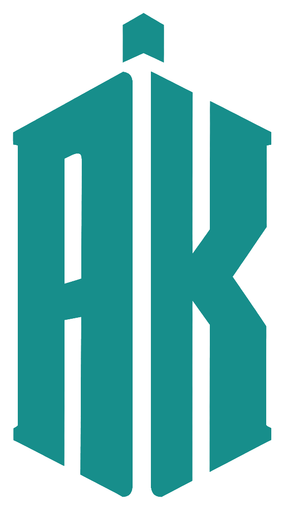

two coins · one site · pick a side
Programmer & data scientist. Projects, signal, reading, and dev writing. Dark, monospace, a little 8-bit.
Essays, a notebook, mixtapes. Warm paper, slower, weirder. The writing half of the coin.